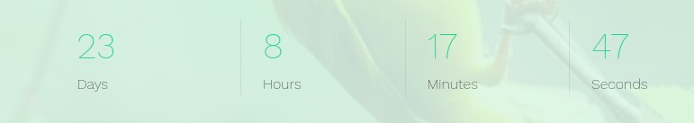
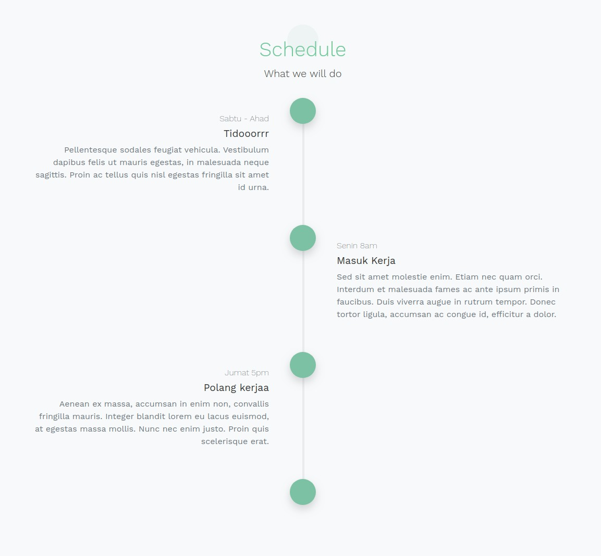

“Wacara Event Organizer” Documentation by “Rendy” v1.0
“Wacara Event Organizer”
Created: 29/9/2019
By: Rendy
Email: rendy.de.p@gmail.com
Thank you for purchasing Wacara Event Organizer. If you have any questions that are beyond the scope of this help file, please feel free to email via my user page contact form here. Thank you so much!
Table of Contents
- Introduction
- Installation
- The Events
- PSD Files
- Sources and Credits
- PHP Code Explanation (If your theme uses PHP)
- Flash (If your theme uses Flash)
- API Usage (If your theme uses an API)
- Any additional unique features that need an overview
A) Introduction - top
Wacara Event Organizer is a WordPress theme to create and manage events on the fly.
With Wacara you can create both paid and free event, and it uses Stripe for the payment gateway.
B) Installation - top
Before installing the theme, make sure you have Stripe account to be used as the payment gateway.
To install the theme, as simple as below:
- Go to your site administrator page.
- Goto Appearance > Themes
- Click Add New > Upload Theme
- And select your theme with .zip format
Your theme is installed, but before creating an event, there are some steps that you need to complete first to get the most of the theme.
- Update your site logo, by clicking Wacara Options
- Update the Stripe setting with your Stripe account, simply go to Wacara Options > Stripe Options
- Create your first event's Headers. Go to Headers > Add New. For more details about Headers you can jump here
- Create your first event's Locations. Go to Locations > Add New. For more details about Locations you can jump here
- Create your first event's Speakers. Go to Speakers > Add New. For more details about Speakers you can jump here
- Create your first event's Prices. Go to Prices > Add New. For more details about Prices you can jump here
- Once everything is ready, you can start creating your first event by clicking Events > Add New
D) The Events - top
When you are creating an event, there are bunch of configurations you can play with. Basically, they are separated into three different metaboxes, Detail, Schedule, and Design.
D.1) Detail - top
In this metabox we will be separate into three different tabs, General, Rules, and Fields.
D.1.1) General - top
This tab contains few fields that will be explained below.
-
Date start, is field to configure when the event will be started. This field also has responsibility to the countdown in header section.

Countdown section in header.
- Single day, as its name, whether we want to create an event that will be held in one day or multiple day. If Single day is checked, it will reproduce another field which is called Time end. The field is used to save information when the event will be ended. In another hand, if Single day is not checked, it will also reproduce a field called Date end. it's opposite from Date start, which is to save the date end time of when the event will be ended.
D.1.2) Rules - top
This tab only contains one field, that is Allow register, if you check this option you will allow the user to register to your event. In another hand, if you uncheck this option you will not allow user to register to your event. This option will useful if you are organizing free public event which does not require any registration.

Registration section if the event does not allow registration.
D.1.3) Fields - top
In this tab you can configure the fields of your event's registration form.
Basically, every field has three options, whether include the field on the registration form or not, set the field as mandatory, and set the label of the field. But there are two fields that you can not exclude the field and its mandatory function, they are Email and Name.
D.2) Schedule - top
You can display the information of the event's rundown from the start until the finish. You can add as many timeline as you desire, and each timeline has three fields, they are Period, Title, and Content.
E) Sources and Credits - top
I've used the following images, icons or other files as listed.
- File name from file author
- File name from file author
- File name from file author
- File name from file author
Once again, thank you so much for purchasing this theme. As I said at the beginning, I'd be glad to help you if you have any questions relating to this theme. No guarantees, but I'll do my best to assist. If you have a more general question relating to the themes on ThemeForest, you might consider visiting the forums and asking your question in the "Item Discussion" section.
Rendy